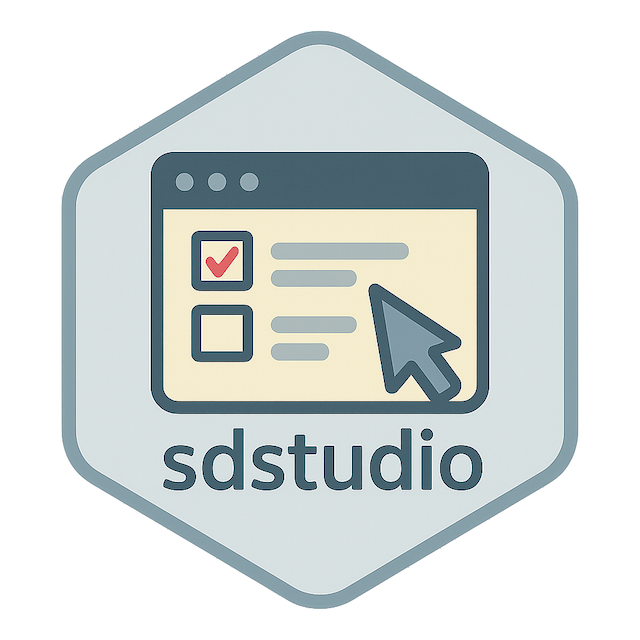

Introducing sdstudio: A companion GUI for surveydown
A brief walkthrough of the sdstudio R Package, a companion GUI for surveydown. 
As a companion package to the surveydown platform, sdstudio serves as a comprehensive GUI for working with surveydown surveys. It allows you to build and preview surveys as well as manage response data all without requiring programming knowledge.
Below is a brief walkthrough video of the sdstudio package:
1 Getting Started
1.1 Installation
The sdstudio package is currently in development and can be installed directly from GitHub:
# Development version
pak::pak("surveydown-dev/sdstudio", ask = FALSE)Since sdstudio is a companion package of surveydown, make sure to install surveydown as well:
# Development version
pak::pak("surveydown-dev/surveydown", ask = FALSE)
# CRAN version
install.packages("surveydown")1.2 Launch!
Launch the studio in your browser using this function:
sdstudio::launch()The sdstudio interface is organized into three main tabs that follow the natural survey workflow:
- 🏗️ Build: Visual survey creation with side-by-side structure and scripts
- 👁️ Preview: Real-time survey testing
- 📊 Responses: Data collection, analytics, and export capabilities
2 The “Build” Tab
2.1 Start from a Template
The “Build” tab is your workspace of survey construction. You can either start from a prepared template or continue with your own survey files. The “Directory” will show your current working directory, but you can change it to any directory where your survey files are stored.
We currently have 15 templates to choose from. The default template contains a minimum basic structure for a clean start. You might also try the question_type template for a showcase of all question types, or try some advanced features with conditional_display, conditional_navigation, etc. For a full list of templates, see the templates repo on GitHub.
Start from a Template in the Build Tab
2.2 Build Your Survey
After you’ve selected your template, or if you already have an existing survey, you’ll see the dual panel of survey constructions on the “Build” tab. The “Structure” section on the left shows the page-content structure of your survey. The “Code” section on the right displays the survey scripts in a code editor.
Dual Panel of the Build Tab
2.2.1 The Structure Section
The “Structure” section on the left gives you 2 hierarchies: page and content. The pages can be toggled on to show the content, or toggled off. There are two types of content: questions and texts, with labels of “Q” and “T”, respectively.
There are buttons on each page and content which self-explain their capabilities. The “Add A New Page” button at the bottom allows you to create a new page.
The question content shows question ID, question type, and question label. You can review the full question details with the edit button, or view the full question definition code on the code section. The text content shows the first 5 words of the full piece of text.
Click on the +T/+Q button to add a text/question
All elements support drag-n-drop operations. After each operation, the structure will refresh and update the code editor on the right. If you move two test elements together, they will merge in to one text element.
Dragging two texts together will merge them
2.2.2 The Code Section
For now the surveydown Studio has powerful support to survey.qmd because it is meant to be the main file for survey construction. However, even though app.R is directly editable, we still recommend that you edit it using your IDE or other text editors. All our templates have the app.R file ready to run, which can be a good starting point.
The “Code” section on the right is an integrated code editor that allows you to edit the survey scripts directly, with the survey.qmd file opened by default. It also reflects any operation you’ve done on the “Structure” section. The other file, app.R, is available for direct editing as well.
3 The “Preview” Tab
The “Preview” tab is where your survey comes to life. It provides a real-time, interactive preview of your survey as you build it, allowing you to see exactly how respondents will experience your survey.
3.1 Live Rendering
Every time you make changes in the Build tab, the survey is live-rendered and revealed in the Preview tab. It takes a couple of seconds to render, so if you switch to the Preview tab too early, you’ll see message of survey being rendered. After rendering is done, the survey will be available.
The survey preview is live and interactive
3.2 Desktop and Mobile Views
You can toggle between “Desktop View” and “Mobile View” using the pair of buttons at the top right corner:
Toggling between desktop and mobile views
3.3 New Sessions
You might have noticed there is a green refresh button on the top right as well. This is for you to manually refresh the preview if you want to restart a session:
Restart a new session using the refresh button
4 The “Responses” Tab
We built sdstudio for two purposes: for designing surveys and for managing survey response data. You can use the studio for either or both purposes.
The “Responses” tab is used to view two forms of survey response data:
- Local Mode: This mode allows you to view “preview data” while locally previewing your survey without having a database connection. The preview data are stored in a local “preview_data.csv” file and are purely available for the purposes of previewing what your data will look like once you have a database connection.
- DB Mode: After creating and testing your survey, you can add a database connection to start collecting survey responses in your live database.
Lets go through each of these use cases in details.
4.1 Local Mode
All our templates have Local Mode enabled by default, because we recommend you to start from local testing. To start with your local testing, you can simply go through all 3 tabs in order: Build, Preview, and then Responses.
Below is a brief walkthrough of the process:

Build, Preview, and Responses in Sequence
4.2 DB Mode
For instructions on how to obtain your database credentials, see the Storing Data documentation page.
To get started with viewing your database response data, you need to firstly switch to DB Mode by clicking the “DB Mode” button on the top right corner. This is available in all 3 tabs. Then, in your “Responses” tab, you’ll see a “Database Connection” section on the top. Toggle on the “Settings” button and fill in your database credentials. You can test the connection by clicking the “Test Connection” button. If you have already set up your database credentials using sd_db_config() to create a local .env, then your credentials should show here.
In order to have a clean start, we recommend you to name a new table in the “Table” field of “Database Connection”. Upon clicking “Test Connection”, this table will only be a placeholder, and the database will create such table once you start your first survey run.
Input your credentials and create a new table
If the connection is successful, you will see a “Connected” status message in green. The “Choose a table to view” section will show the new table you just created, but all fields will be empty. They will be filled in once you run your survey in the Preview tab.
After you’ve taken care of the database connection, you can go back to the Build tab and proceed with your survey construction, following the exact same steps. The only difference is that now, when you run the survey in the Preview tab, your responses will be stored in the database table you just created instead of the local “preview_data.csv” file.
4.3 Viewing other tables
It is important to note that you can use the “Responses” tab to view all tables stored in your database. For example, if you have multiple surveys you are working on (each in a separate folder) that share the same database, you can select other tables to view from the “Responses” tab.
Input your database credentials
If the connection is successful, you will see a “Connected” status message in green. You can choose your desired response table from the dropdown menu, review its progress and details, and download the csv file if needed:

Fill in your database credentials and click on the “Test Connection” button
5 Data Security
5.1 The .env File
When you input your database credentials in the “Responses” tab, it creates a local .env file in your current working directory, which is a hidden file. This file is used to store environment variables securely. Along with this file, there will be a .gitignore file created with .env added to prevent it from being accidentally pushed to your git repository. This is a good practice to keep your credentials safe.
In this .env file, you will find the following variables:
# Database connection settings for surveydown
SD_HOST="your-database-host"
SD_PORT="your-database-port"
SD_DBNAME="your-database-name"
SD_USER="your-database-username"
SD_PASSWORD="your-database-password"
SD_TABLE="your-database-table"The editing of this file is bi-directional, so you can either edit on this file, or use the sdstudio interface.
5.2 GSSAPI Encryption
The sdstudio::launch() function allows the gssencmode argument. It controls the encryption mode for database connections. This is crucial for ensuring secure communication with your database, especially when handling sensitive survey data.
By default, we set gssencmode = "auto", which attempts to use GSSAPI encryption if available, falling back to a plain connection if not. This is the recommended mode for most users. The connection status will show a green “Connected (GSSAPI enabled)” message if GSSAPI is successfully enabled, or a yellow “Connected (GSSAPI disabled)” message if it falls back to plain connection:
# Auto mode (recommended) - tries GSSAPI first, falls back if needed
sdstudio::launch()However, if you want to explicitly control the encryption mode, you can set gssencmode to one of the following values:
# Prefer mode - only use GSSAPI
sdstudio::launch(gssencmode = "prefer")
# Disable mode - forces plain connection (useful for VPN environments)
sdstudio::launch(gssencmode = "disable")6 Conclusion
As a companion GUI for the surveydown platform, sdstudio significantly simplifies the survey creation process. It allows users to build, preview, and manage surveys through an intuitive interface, without requiring extensive programming skills. The three-tab workflow - Build, Preview, and Responses - provides a comprehensive solution that covers the entire survey lifecycle.
If you have any questions or feedback you’d like to share, please drop us a line using GitHub Discussions.
For more information, visit the sdstudio documentation or explore the surveydown platform.